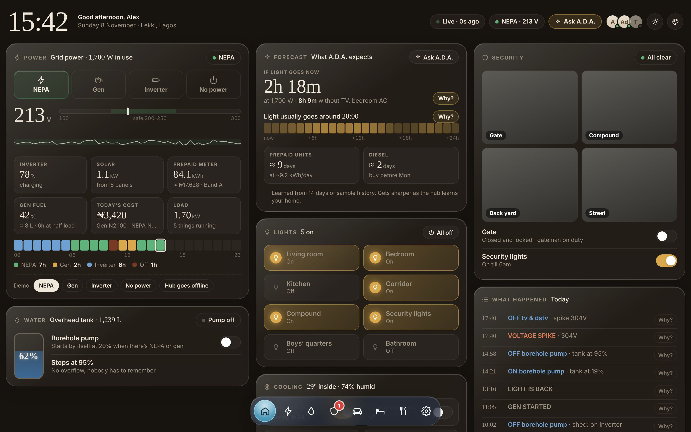
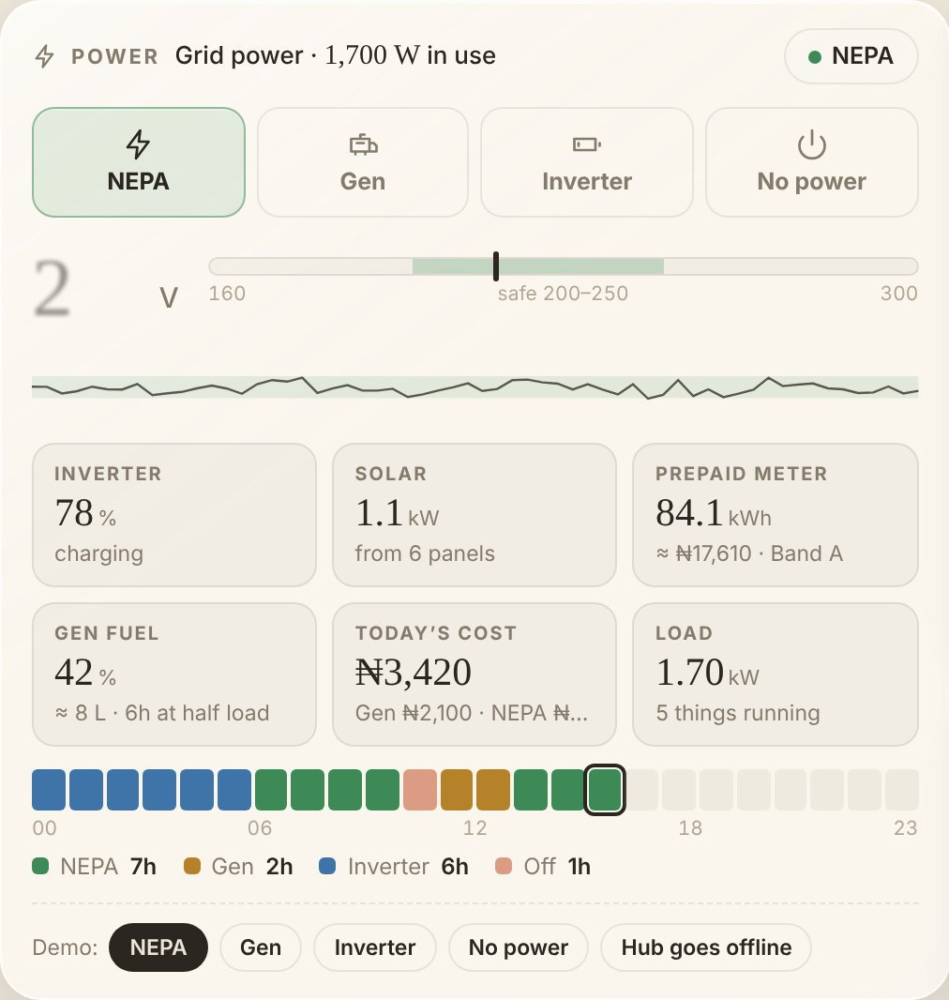
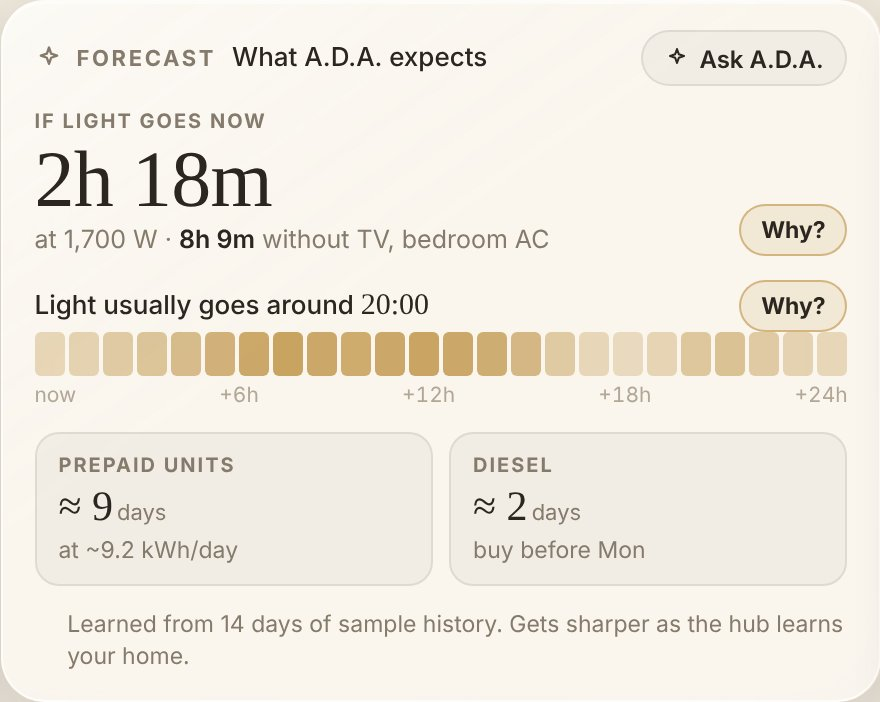

A small controller and dashboard that knows when it's NEPA, gen or inverter, logs every generator hour, runs the borehole pump on tank level, and protects equipment from voltage spikes.

Across a portfolio, the same few issues repeat every week. They cost diesel, water, equipment and staff time, and most of them are hard to see until something goes wrong.
Generator hours are tracked on paper, if at all. When the diesel bill comes, there's no reliable record of how long each gen ran or why, so reconciliation with vendors and residents turns into an argument.
Borehole pumps are switched by hand. Someone forgets, the tank overflows and wastes water and power. Or nobody switches it on before NEPA goes, and residents wake up to dry taps.
When a building drops to inverter, ACs, pumping machines, irons and kettles keep running. The battery is flat by midnight and wears out years early. The installer gets blamed.
Grid and generator voltage swing well outside the safe range. TVs, fridges, CCTV and access control equipment fail long before their time, and nobody knows when it happened.
A small ESP32-based unit fitted near the distribution board. It reports the power source and switches the pump and selected heavy loads through relays. If it loses contact with the hub, relays drop to safe states.
Runs the automation rules and keeps the event log on site, so everything keeps working when the internet doesn't. Every automatic action is recorded with its reason.
Opens on any phone, tablet or wall-mounted screen. Live status, controls, forecasts, and Ask A.D.A., an assistant that explains what happened in English or Pidgin.


| Feature | What it means for your team |
|---|---|
| Live power source | See instantly whether each building is on NEPA, generator, inverter or has no power, with live voltage. Every changeover is timestamped. |
| Generator hours & diesel | Exact run-hours per generator per day, with estimated diesel use and cost. A clean record for reconciliation with vendors and residents. |
| Borehole automation | The pump starts when the overhead tank is low and power is available, and stops at 95%. No overflow, no dry tanks, no one assigned to the switch. |
| Load shedding on inverter | Heavy loads switch off automatically when a building drops to inverter, so batteries last through the night and last more years. |
| Voltage protection | Sensitive equipment is cut during spikes above the safe band, and the event is logged with the reading. |
| Lights & security | Compound and security lights switch on during outages or on a schedule. Gate and lock status on the same screen. |
| Forecasts | Battery runtime at the current load, when outages usually start, and when diesel or prepaid units will run out. |
| Clear event log | Every automatic action in plain language with its reason, e.g. "pump off: tank at 95%" or "TV off: spike 304 V". |
| Honest data | If a building's controller stops reporting, the dashboard says the data isn't live and refuses to switch anything, instead of showing stale numbers. |
| Access per person | Owners, managers and staff each get the dashboards they need, with off, view or edit rights. |
Answers come from the building's own live data. Forecasts and basic answers work offline; the full assistant uses Claude when there is internet.
| Item | Purpose |
|---|---|
| Controller unit | ESP32-based board in an enclosure near the distribution board, with relay outputs for the pump and selected loads. |
| Sensors | Mains voltage and source detection, and an ultrasonic level sensor on the overhead tank. |
| Hub | A small always-on device (or an existing phone/laptop during the pilot) on the building's Wi-Fi. |
| Dashboard | Nothing to install: it opens in a browser on any phone, tablet or wall screen. |
Together we choose one block or building where power and water cause the most trouble, and agree what success looks like.
Controller, tank sensor and hub are fitted. Any mains connection is done by a qualified electrician. Dashboard access for your team.
A.D.A. logs every changeover, generator hour and pump cycle, and handles the routine switching. Weekly check-ins.
We go through the logs, diesel and water savings, and gaps, and decide together on next steps.
Access to one building and its distribution board · a contact on site · the building's Wi-Fi (or a hotspot) · honest feedback at the weekly check-ins.
A complete record of the building's power and water for six weeks · automated pump and load control · weekly summaries · a say in how A.D.A. is shaped for facility managers.
Working today Next, shaped by the pilot
No. The rules, log and forecasts run on site. Internet adds remote access and the full assistant.
No. It works alongside your existing gen, inverter and changeover, and manages loads around them.
Relays fall back to safe states, and the dashboard shows the building as not live.
Only people you give access to, with off, view or edit rights per dashboard.